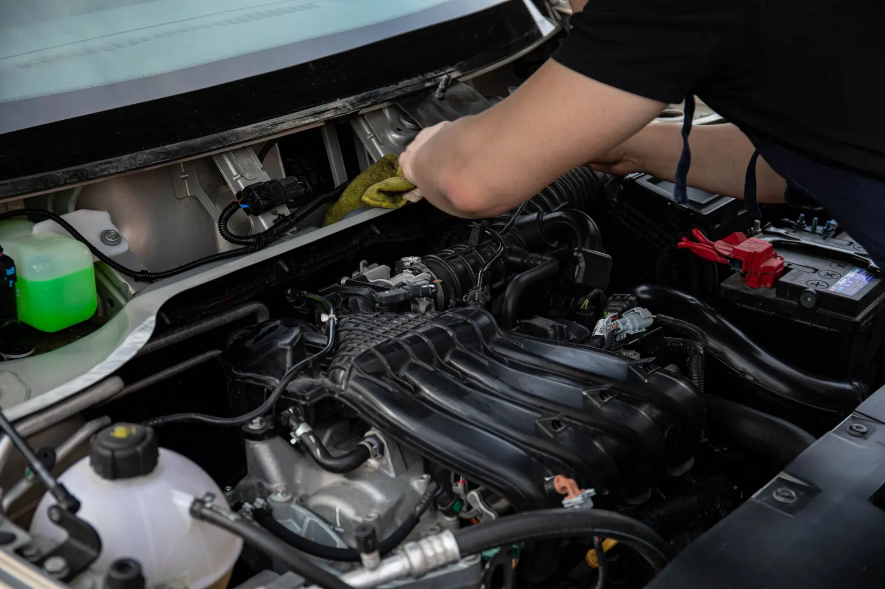

Rob-Oil, Wejherowo
Zapytaj o cenę dla swojego auta
Podaj markę, model i opisz zakres prac. Aktualną cenę potwierdź przed umówieniem wizyty.
Umów wizytę
Cennik usług
Cena: zadzwoń, podamy. Zapytaj również, czy wycena obejmuje części, materiały i robociznę.
| Usługa | Cena | Kontakt |
|---|---|---|
| Wymiana oleju i filtrów | Cena: zadzwoń, podamy | Zapytaj o cenę: Wymiana oleju i filtrów |
| Serwis okresowy i przeglądy | Cena: zadzwoń, podamy | Zapytaj o cenę: Serwis okresowy i przeglądy |
| Naprawy mechaniczne | Cena: zadzwoń, podamy | Zapytaj o cenę: Naprawy mechaniczne |
| Diagnostyka komputerowa | Cena: zadzwoń, podamy | Zapytaj o cenę: Diagnostyka komputerowa |
| Opony i wulkanizacja | Cena: zadzwoń, podamy | Zapytaj o cenę: Opony i wulkanizacja |
| Serwis klimatyzacji | Cena: zadzwoń, podamy | Zapytaj o cenę: Serwis klimatyzacji |
| Olej w skrzyni automatycznej | Cena: zadzwoń, podamy | Zapytaj o cenę: Olej w skrzyni automatycznej |
| Sprawdzenie auta przed zakupem | Cena: zadzwoń, podamy | Zapytaj o cenę: Sprawdzenie auta przed zakupem |
Nie wiesz, jaka usługa będzie potrzebna? Opisz problem w formularzu albo zadzwoń.
Porozmawiajmy o Twojej sprawie.
Podaj markę, model i opisz swoją sprawę. Zapytaj o cenę oraz dostępny termin.